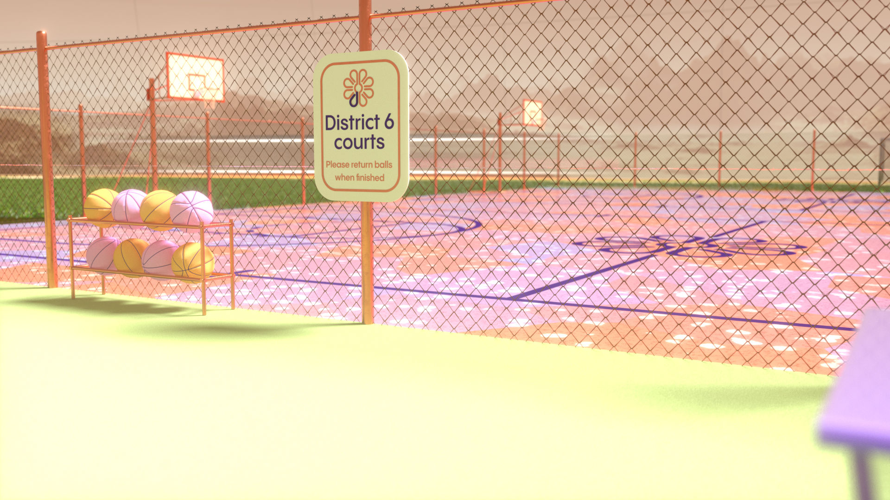

Central is naturally located at the centre of Acidalia, and is where you'll find everything from shopping to entertainment, restaurants, gyms, and more. All roads lead to Central in Acidalia, so you'll have no difficulty finding it. If you see the icon above on any public transport, that means the destination is Central so you can just hop on.
central towers
The North, East, South and West Towers are where you will find the majority of shops, restaurants and facilities in Central. Each tower is has 40 levels including 7 underground, where you can find everything you need. Each tower has an Acidalia icon that signifies which tower it is, so you can easily find the right one. If you happen to be half way up the tower and realise you're in the wrong one, every 10 levels is bridge between all of them for you to take to the tower you need.
The platform
< 360 >
Where the North, East, South, and West towers meet in the Central zone, we have the platform. You can take the elevator up from any tower to the very top to see a bird-eye view of the entire city of Acidalia, as well as the surround landscape of Acidalia Planitia. It's the perfect spot to meet up with friends and will be home to a number of pop-up events further down the track.
District 6 is one of two activity districts, with District 2 being your other option. This is where you will find facilities like swimming pools, basketball courts, and access to the outer cycling track.
The courts

No city would be complete without basketball courts for all your exercise and leisurely needs. Located on the outskirts of districts 2 and 6, the courts are situated right at the edge of the dome so you can be playing ball almost right within the Martian landscape. If you are from another district, the courts are easily accessible via the outer loop tram that leaves every 5 minutes.